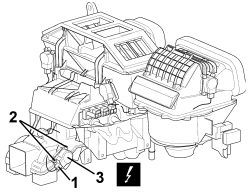

5040D82 AIR CONDITIONING LOWER AIR DISTRIBUTION FLAP CONTROL MOTOR - R.R.
- Path
- Procedures > 50 AUXILIARY UNITS > 5040 AIR CONDITIONING CASING AND COMPONENTS > 5040D AIR CONDITIONING CONTROLS > 5040D82 AIR CONDITIONING LOWER AIR DISTRIBUTION FLAP CONTROL MOTOR - R.R.
- Kind
- repair procedure (removal / refitting; the operation number is the code)
- Applies to
- all engines; all production periods
- Interactive page
- https://sloeber94.github.io/elrnDB-aBrrSpdr/en/#/946002288
Applies to: all engines; all production periods
 Removing
Removing
 Refitting
Refitting- Work on the passenger side.
Op. 7040A65 CONSOLE SIDE CLOSING (ONE) - R.R.
1. Working through the side console compartment, disconnect the electrical connection.
Description | Component |
|---|---|
REAR AIR DISTRIBUTION ACTUATOR |
2. Undo the bolts.
3. Remove the motor by releasing the splined connection shaft.

Applies to: all engines; all production periods
Refitting
Removing- Check that the motor is not damaged.
- Position the motor and engage the splined connection shaft.
- Tighten the bolts.
- Connect the electrical connection.
Op. 7040A65 CONSOLE SIDE CLOSING (ONE) - R.R.
- When reconnecting the battery, wait a few minutes to allow the system to realign the actuators.